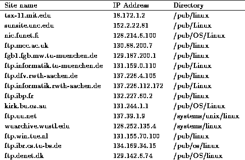

Table C.1 is a listing of the most well-known FTP archive sites which carry the Linux software. Keep in mind that many other sites mirror these, and more than likely you'll run into Linux on a number of sites not on this list.

Table C.1: Linux FTP Sites
tsx-11.mit.edu, sunsite.unc.edu, and nic.funet.fi are the ``home sites'' for the Linux software, where most of the new software is uploaded. Most of the other sites on the list mirror some combination of these three. To reduce network traffic, choose a site that is geographically closest to you.